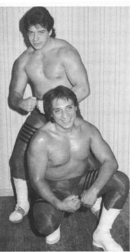
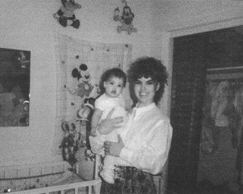
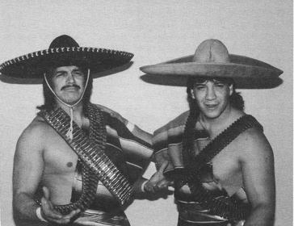

Глава 9
Перевод Александра Суменко для VSplanet.net
Викки и я жили в небольшой квартире, но когда срок аренды истек, моя мама попросила нас переехать к ней. Это было правильным решением: ей было одиноко без отца, а я не зарабатывал достаточно денег, чтобы жить отдельно.
Пока я выступал на шоу, мама готовила Викки к жизни жены рестлера.
Ее уроки начались еще тогда, когда мы с Викки только начали встречаться. Викки приходила к нам домой, когда я тренировался на ринге во дворе. Будучи на ринге, я видел, как она сидела в гостиной за столом, ожидая меня. Мама однажды взяла ее за руку и сказала:
— Не жди его, они будут там целый день.
Мама взяла шефство над Викки, обучив ее всем тонкостям жизни с рестлером, например: что готовить мне (рестлеры соблюдают особую диету), как жить с мужем, который постоянно пребывает в разъездах.
Большинство женщин не выйдут замуж за мужчину, которого не бывает дома 4 дня в неделю. Когда я не тренировался, я выступал в других городах. Жизнь рестлера тяжела для него и его окружения.
Когда я работал в других местах, Викки звонила мне и, плача, жаловалась, как она скучает и как тяжело ей жить без меня. Мама настраивала ее быть храброй.
— Если будешь плакать, — говорила она, — не делай этого на его глазах. Твоя задача — оставаться сильной, пока он зарабатывает вам деньги на жизнь.
Также она научила Викки, что ее задача сделать так, чтобы мне не пришлось работать, когда я возвращаюсь домой. Она стирала, готовила мне еду и, что более важно, поддерживала меня эмоционально.
Конечно, это звучит старомодно, но это работает. Это похоже на поговорку: за каждым успешным мужчиной стоит сильная женщина. Я не смог бы заниматься своим делом без поддержки жены.
Непросто быть домохозяйкой и заботиться о семье. Мне приходилось иногда покупать домой продукты, и, скажу я вам, это тяжело! Это настоящая работа.
Моя семья познакомила Викки с Иисусом. Она не знала Господа, когда росла. Она спросила мою мать: «Где вы берете силы?», и мама ответила: «Нужно верить в Господа».
Когда мы начали встречаться, она стала ходить в церковь по воскресеньям, чтобы проводить время со мной. Пока она ходила в церковь и изучала Библию, ей стало нравиться. Она не знала, что существует Господь, который любит, и Библия, которую она могла читать. Это было для нее новым незнакомым миром.
Предполагаемая дата родов Викки прошла, и мы начали волноваться. Я был особенно обеспокоен. Кто-то рассказал мне, как жена одного парня перенашивала ребенка, тогда они отправились кататься в машине, и встряска спровоцировала роды. Я не знал, верить этому или нет, но это казалось хорошей идеей, поэтому я повез Викки кататься. Я вел машину, как ненормальный, наталкиваясь на все кочки.
Естественно, на следующий день у нее отошли воды. Но проблема была в том, что плод еще не опустился. Ее роды продолжались 46 часов.
Будучи неизвестным молодым рестлером, я смог получить только страховку Medicaid. Нас отправили в больницу, принадлежавшую медицинскому институту. По сути, Викки была экспериментальным пациентом для интернов. Она лежала на койке, а все новые интерны приходили и осматривали ее в течение этих двух дней.
Наконец пришел настоящий врач и спросил: «Как давно у нее отошли воды?»
Осмотрев ее, он обнаружил, что она готова к родам. Ей дали эпидуральную анестезию, которая расслабила ее и способствовала родам. Оказалось, что плод был слишком велик. Девочка не могла выйти из матки Викки, поэтому врачам пришлось вытягивать ее клещами.
14 октября 1990 года родилась моя дочь. Мы решили назвать ее Шол Мари. Я влюбился в нее, едва увидел мою маленькую Шол Мари. Поскольку ее тащили клещами, при рождении ее голова имела конусовидную форму, но, слава Богу, этот дефект прошел. Если бы этого не случилось, ей пришлось бы постоянно носить шляпы!
В ту ночь я вернулся домой из больницы и упал на колени. Я благодарил Бога за Шол и просил Его защищать мою девочку. Я отдал ее на волю Господа.
Я всегда верил, что Господь — наш настоящий отец. Я просто отец на земле. А у Бога нет внуков. Мы все Его дети. До сего дня я молюсь по вечерам и прошу Господа защищать Шол, Шерилин и Кайли. Я благодарен Ему за этот дар, но они принадлежат Ему. Я всего лишь Его инструмент.
После родов Викки и Шол заболели пневмонией. Долгие роды ослабили иммунную систему Викки настолько, что она не могла защитить ее от болезни. Викки в итоге пролежала в больнице 4 дня, а Шол пробыла там целую неделю.
Естественно, я переживал, но врач объяснил мне, что это относительно нормально и не стоит сильно волноваться. Все мои страхи затмил тот факт, что у меня родилась самая красивая дочка в мире.
У нас почти не было денег после рождения Шол.
За два шоу в неделю в Хуаресе я зарабатывал около 300 долларов. Нам очень помогло то, что мы жили с моей мамой. Она отказывалась брать с меня деньги за аренду. Она просила меня только помогать с квартплатой и покупкой еды.
Я делал все, что мог, соглашаясь на приработки. Я работал в международном фитнес-центре, продавая членские подписки. Чаще всего, я выступал на ринге. Когда мне выпадала возможность выступить, я собирал вещи и ехал на шоу.

Эдди Герреро и Хавьер Льянес
Наконец я понял, что должен вернуться в EMLL, даже если это означало переезд в Мехико. Настало время зарабатывать достойные деньги. Я хотел дать семье достойную жизнь.
Я решил переехать в Мехико, потому что беспокоился за Викки и дочку.
Мой кузен Хавьер Льянес, который работал в EMLL, говорил мне: «Привези семью с собой, потому что иначе у тебя крыша поедет». В общем, он оказался прав. Через 3 месяца я сходил с ума от тоски по дому и одиночества. Я был удручен, живя там. Я не мог преодолеть тоску по дому. Я признаю, я тогда еще не был взрослым.
Я больше не мог продолжать в таком режиме, поэтому позвонил Викки и сказал:
— Забудь о том, что я говорил раньше. Я хочу, чтобы ты и Шол были здесь со мной.
Будучи один, я жил в пригородном отеле «Сан-Диего». Теперь я нашел номер побольше, а Хавьер помог мне выбрать колыбель для Шол.
Моя жизнь стала лучше, едва они приехали ко мне. Мы втроем жили в номере отеля 8 месяцев. Конечно, денег у нас было немного, да и в номере бывало тесновато, но это было лучшее время в нашей с Викки жизни. Мы были вместе, а это самое главное.
Букером EMLL в те дни был Хуан Эррера. Он ничего не понимал и был полным козлом. Он начинал уборщиком, но благодаря своему умению поддакивать кому нужно, поднялся до должности букера. Власть ударила ему в голову. Он тряс карандашом перед лицами рестлеров и приговаривал: «Видите это? Это сила», намекая, что может уничтожить их карьеры в мгновение ока.

Викки и Шол в нашем номере в Мехико
Эррера был настоящим придурком. Он подходил к парням и хлопал их по спине со всей силы. Это было оскорбительно. А он стоял и смеялся, потому что никто не мог ничего сказать или сделать, ведь он был главным букером.
Однажды, когда Хуан хлопнул меня по спине, я вышел из себя. Вместо того чтобы промолчать, я развернулся и толкнул его.
После этого он стал невыносим. Он стал издеваться надо мной, отменять мои матчи. Наконец я вышел из себя и отправился поговорить с ним.
— Я здесь босс, — заявил он, тыча в меня своим карандашом. — Меня нужно уважать. Больше никогда не притрагивайся ко мне своими руками.

Я с Мандо. Я никогда не любил клише о мексиканцах, вроде сомбреро и бандитских стереотипов
Я пообещал этого не делать, и все снова пришло в норму. Он продолжил вести себя, как урод, хлопал меня по спине, щелкал по ушам, зная, что я ничего не смогу с этим поделать. Мне нужно было кормить семью и платить за дом — я не хотел ставить свою карьеру под угрозу. Поэтому я молча проглатывал обиды от мерзкого маленького ублюдка, которому не хватило бы сил даже завязать мои шнурки.
Приближалось Рождество, и мы с Викки страшно соскучились по дому. Мы провели в Мехико почти год и хотели встретить праздники дома в Эль-Пасо.
Я отправился к Хуану.
— Я хотел бы съездить с семьей домой на Рождество, если у тебя нет с этим проблем, — сказал я. — Я вернусь в январе, хорошо?
— Без проблем, — ответил он. Я был на седьмом небе от счастья. Я с Викки и Шол отправился домой в Эль-Пасо, и мы провели отличные праздники с нашими семьями.
После нового года я позвонил в EMLL и спросил, где мне предстоит начать работу. Меня попросили перезвонить через неделю, пообещав назвать точную дату. Через неделю повторилась та же история. Это продолжалось целый месяц. Наконец я сорвался:
— Да что происходит? Мне вообще нужно возвращаться к вам?
— Перезвоните через неделю, — услышал я в ответ.
Я разозлился и начал обзванивать тех, кого знал, пытаясь найти работу где-то еще, пока ожидаю ответа. Но никто не хотел моих услуг. Я мог работать только в Хуаресе, который был для меня почти домом, и Тихуане, где сохранил дружеские отношения с местным промоутером.
Спустя некоторое время я узнал, что случилось. Хуан Эррера воспользовался моим отъездом на праздники и занес меня в черный список.
С тех пор я мог получить работу только в Хуаресе и Тихуане, плюс какие-то небольшие независимые шоу в Штатах. Стоит ли говорить, это не давало достаточно денег для поддержки моей маленькой семьи, поэтому Викки пришлось устроиться на работу в местный супермаркет.
Я делал все, что мог, выступая при первой же подходящей возможности. С моим незаконченным образованием я смог получить лишь работу официанта в небольшом ресторане под названием «Кухни Луизианы». Это было весьма унизительно. Меня показывали местные телесети, поэтому люди узнавали меня: «Эй, ты случайно не Эдди Герреро?» Я был настолько смущен, что иногда отрицал это.
Мы переехали в крошечную квартиру, почти без мебели. Мы с Викки спали в ее старой кровати, в которой она выросла. Единственной не подержанной вещью была так называемая «Первая кроватка», которую я купил для Шол в Wal-Mart.
Мы едва сводили концы с концами. Денег было так мало, что мы ели в гостях у наших мам. Тури выручал нас в то время — он заходил в гости с пакетами продуктов и иногда с ящиком пива.
Я всегда буду винить этого козла Хуана Эрреру за то, что моя семья жила в таких условиях. Он понимал, что будет, когда вносил меня в черный список. Куда я мог податься? Я не смог бы заработать на кусок хлеба в Штатах. В то время маленьких рестлеров там не признавали. Ужасно губить жизнь другого человека таким образом.
Боже, благослови мою маму, она увидела, как мне было тяжело.
— Сынок, я так тебя уважаю, — сказала она мне однажды.
— За что? Я даже не могу добыть кусок хлеба для своей семьи.
— Ты бы мог сидеть дома и отказываться обслуживать столики в ресторане из-за ложной гордости. Только сильный мужчина может проглотить свою гордость и делать то, что необходимо для его семьи. То, что ты делаешь, показывает твой истинный характер. Это делает тебя мужчиной. Пройдет немного времени, и Господь укажет тебе путь.
Я долго думал о маминых словах. Тот факт, что какой-то ублюдок Хуан Эррера не позволил мне зарабатывать на жизнь рестлингом, не дает мне права сидеть и жалеть себя. Я решил посвятить себя рестлингу и работать еще больше, чем раньше. Я стал лучше относиться к своему телу: правильно питаться и проводить больше времени в тренажерке. Мой ум обострился, а тело стало гибче и жестче. Когда придет мой шанс вернуться в игру, я буду готов на все сто.